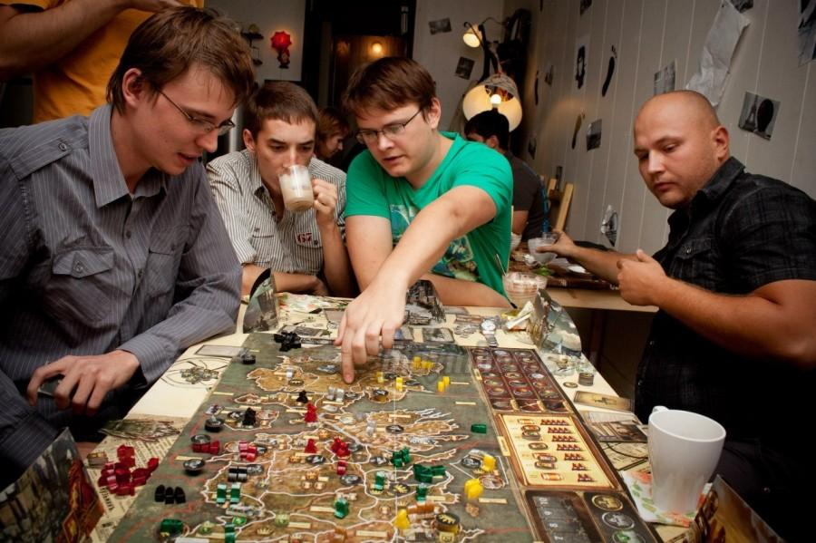

Сайт о настольных играх
Про современные настольные игры:
Настольные игры - это для детей"
Такое предположение осталось у нас с советских времен, когда на самом деле в нашей стране не было настольных игр для взрослых, а те что были не отличальсь ни качеством издания, ни игровым процессом,
но в западном мире эти игры очень активно развивались и развиваются до сих пор. В настоящее же время, лучшие экземпляры настольных игр уже локализованы и получают свое развитие и в России.
Основная аудитория играющая в настольные игры это люди от 25 лет. И подавляющее большинство игр выпущено как раз для этой аудитории, так происходит в Европе (где в каждом доме в среднем имеется 5 настольных игр),
и та же ситуация наблюдается и в России.
Я знаю, настольная игра - это "Монополия"
Пожалуй первое что приходит в голову большинству при словосочетании "настольные игры". Благодаря усилиям маркетологов "монополия" это на самом деле самая известная настольная игра. Но настольные игры далеко как не ограничиваются монополией
- и скорее наоборот - большинство современных настольных игр заметно превосходит ее по своей глубине, интересу, азарту, итп. В большинстве современных игр участник не может выбыть из игры до ее окончания по причине отсутствия игровых денег
(как в монополии) или по какой либо иной. Также вы не будете утомительно сидеть в ожидании своего хода пока его делают остальные - есть игры где ход делается игроками одновременно, (как например, в лучшей настольной игре 2011 года - "7 чудес")
в других играх это время сведено к минимуму - и даже оно используется с пользой каждым игроком (на обдумывание стратегии и действий остальных). Современные игры практически не полагаются на удачу выпадения нужной цифры на кубиках
(в подавляющем большинстве игр он в принципе отсутствует) выиграете вы или нет, в большей мере зависит от ваших талантов, продуманной стратегии, в какой то мере и удачи, ловкости рук (для некоторых игр), ораторскому искусству, итп.
Все зависит от игры, в которую вы играете. О разных типах игр мы поговорим далее в статье.
Чем хороши настольные игры?
Настольные игры активно развиваются и получают все большую популярность за счет нескольких уникальных особенностей выделяющих их на фоне прочих форм развлечения: 1. Настольные игры предназначены для двух и более участников и являются
отличным способом совместного времяпрепровождения (Билет на Поезд - Европа). 2. За одним столом могут собраться представители разных возрастных поколений (дети, взрослые, старшее поколение) 3. Игры универсальны с точки зрения времени и
места игры. Дома, на даче, на отдыхе, в самолете... - все что вам понадобится это коробка с игрой. 4. Настольные игры развивают ваши навыки и знания, поощряют общение, развивают воображение, логическое / абстрактное мышление (Пентаго),
коммуникативные навыки (Диксит), итп.
Какие бывают игры?
100000 тысяч лет до нашей эры Настольные игры это уже давно не просто пара карточек из бумаги, поле с цифрами, фишки и кубик и это уж точно (в большинстве случаев) не детская забава. В настоящее время имеется огромное множество настольных игр.
Четких границ строго относящих игру к определенному типу не существует, есть игры и на ловкость рук и реакцию - "Дикие Джунгли", игры такие где преобладает общение и развиваются коммуникативные навыки, естественно имеются различного рода
стратегии - "Доминион" и экономические игры- "Энергосеть". Одни игры лучше подойдут для игры вдвоем, другие учитывают, что в игру будут играть и взрослые и дети - здесь подойдут семейные игры - "Колонизаторы" или "Каркассон".
Имеются и глобальные игры с продвинутыми механиками и детальностью - для серьезных игроков, которые готовых потратить не один час на изучение правил и на саму игру - "Цивилизация", "Twilight Imperium".
В среднем же партия в большинстве настольных игр займет у вас от получаса до двух (в зависимости от самой игры и количества участников).
При выборе стоит также учесть и обстановку где вы планируете играть - бывают совсем компактные игры - которые можно с легкостью взять куда угодно, есть и наоборот огромные издания - для которых будет и одного стола мало.
Некоторые игры выпущены в нескольких вариантах - компактном и обычном.
Наибольшим успехом пользуются "салонные игры" или игры для вечеринки - и это не удивительно. Во первых такая игра позволяет незатейливо объединить всех пришедших людей -
неважно были они знакомы до этого или нет, за общим делом (развлечением) - "Баусак", "Имаджинариум". Во вторых - это увлекательно и смешно - делайте те вещи которые вы бы не стали делать в обычной ситуации -
"Крагморта", либо наблюдайте за своими товарищами проделывающими очередной трюк - "Alias - Party". С такой игрой вы проведете время гораздо интереснее, чем без нее. Естественно главными особенностями такой игры являются очень простые
правила - которые любой сможет понять буквально за пару минут, яркое оформление, возможность участия большого количество игроков - зачастую верхний предел не ограничен. Кто знает, сколько людей соберется для вашей следующей партии
Haste Bock! Сами игры очень красочно оформлены, имеют приятные на ощупь и долговечные компоненты. Коробка сама просится взять ее в руки.
